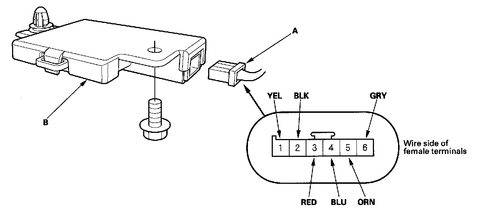
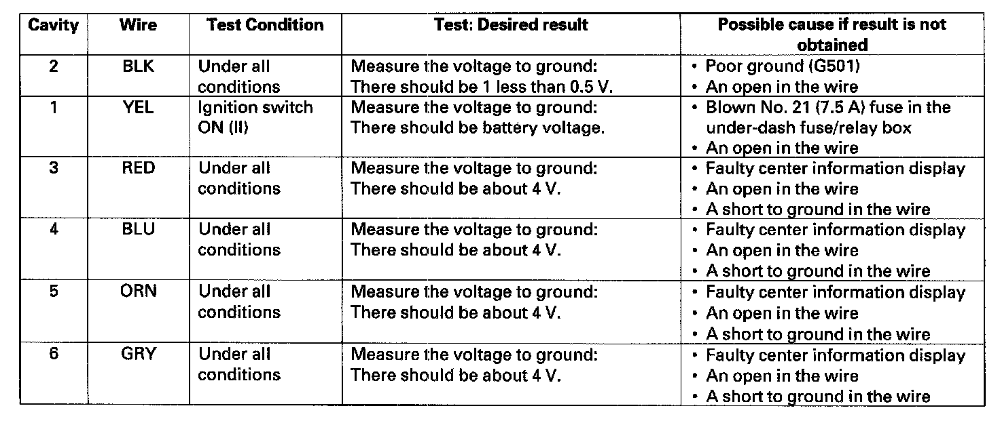

Electrical Compass Unit Input Test
Electrical Compass Unit Input Test1. Remove the headliner.

2. Disconnect the 6P connector (A) from the electrical compass unit (B).
3. Inspect the connector and socket terminals to be sure they are all making good contact.
- If the terminals are bent, loose, or corroded, repair them as necessary, and recheck the system.
- If the terminals look OK, go to step 4.

4. Reconnect the connector to the electrical compass unit, turn the ignition switch ON (II) and perform the following input tests at the connector.
- If any test indicates a problem, find and correct the cause, then recheck the system.
- If all input tests prove OK, the electrical compass unit must be faulty; replace it.